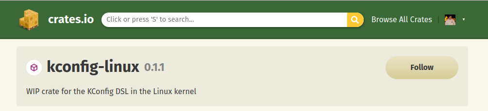

.configCONFIG_OPTION=value CONFIG_BINARY_OPTION=y CONFIG_INT_OPTION=11 CONFIG_TRISTATE_OPTION=m
Kconfig files➜ fd Kconfig virt/kvm/Kconfig sound/Kconfig usr/Kconfig security/Kconfig security/Kconfig.hardening security/yama/Kconfig security/selinux/Kconfig sound/parisc/Kconfig ...
Kconfig structure
➜ cat virt/kvm/Kconfig
...
config KVM_GENERIC_DIRTYLOG_READ_PROTECT
bool
config KVM_COMPAT
def_bool y
depends on KVM && COMPAT && !(S390 || ARM64)
...
Kconfig files contain the options that control what is compiled into a kernelmenuconfig are structuredKconfig language is described in the Linux documentation under Documentation/kbuild/kconfig-language.rstKconfig fieldsconfig
if
menu
source
Kconfig in its placemenuconfig is a menu and a config baked into one field, has no end symbol unlike menu.Kconfig parser to extract all the available options from a kernel sourcepublished as a Rust crate

Kconfig files in Linux... config ACPI_CONFIGFS tristate "ACPI configfs support" select CONFIGFS_FS help Select this option to enable support for ACPI configuration from userspace. The configurable ACPI groups will be visible under /config/acpi, assuming configfs is mounted under /config. if ARM64 source "drivers/acpi/arm64/Kconfig" config ACPI_PPTT bool endif ...
CROSS_COMPILE and ARCH)gcc rather gcc-4.9BR2_LINUX_KERNEL_CUSTOM_CONFIG_FILEarmvirt-32 as the architecturestringhunterkconfig-linux crate#if defined(x) and #ifdef)kconfig-linuxint main { #ifdef CONFIG_FIRST printf("Bears. Beets. Battlestar Galactica."); #if defined(CONFIG_SECOND) printf("The worst thing about prison was the dementors."); #endif #ifdef CONFIG_THIRD printf("I talk a lot, so I’ve learned to tune myself out."); #endif #endif #ifdef CONFIG_FOURTH printf("Today, smoking is going to save lives."); #endif printf("PARKOUR!"); return 0; }
printf("Bears. Beets. Battlestar Galactica."); #if defined(CONFIG_SECOND) printf("The worst thing about prison was the dementors."); #endif #ifdef CONFIG_THIRD printf("I talk a lot, so I’ve learned to tune myself out."); #endif
printf("Today, smoking is going to save lives.");
printf("The worst thing about prison was the dementors.");
printf("I talk a lot, so I’ve learned to tune myself out.");
[
{
"CONFIG_NAME": [
"List",
"of",
"lines"
]
}, ...
]
find_strings
usage: find_strings.py [-h] [-o OUTPUT] INPUT
Extracting strings from stringhunter's JSON output.
positional arguments:
INPUT JSON file generated by stringhunter (sources.json)
options:
-h, --help show this help message and exit
-o OUTPUT, --output OUTPUT
JSON with argument names and strings
hardcodes library[
{
"CONFIG_NAME": [
"List",
"of",
"hardcoded",
"strings"
]
}, ...
]
dedup_strings
usage: dedup_strings.py [-h] [-o OUTPUT] INPUT
Remove duplicate strings from strings.json
positional arguments:
INPUT JSON file generated by find_strings (strings.json)
options:
-h, --help show this help message and exit
-o OUTPUT, --output OUTPUT
JSON with deduplicated strings
find_stringsfor config_name, strings in configs_strings.items(): for other_config_name, other_strings in configs_strings.items(): if config_name == other_config_name: continue for string in strings: if string in other_strings: configs_strings[config_name].remove(string) configs_strings[other_config_name].remove(string)
ink-checker